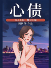
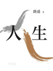
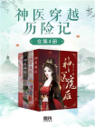

-

-
间谍先生系列（全8册）
弗·福赛斯 试读
68本套装书包括：《间谍先生：豺狼的日子》《间谍先生：上帝的拳头》《间谍先生：复仇者》《间谍先生：万无一失的杀手》《间谍先生：最精妙的骗局》《间谍先生：阿富汗人》《间谍先生：暗杀名单》。
-

-

-
千门·云襄传（全6册 | 陈晓、毛晓彤主演电视剧原著）
方白羽 试读
494为建跑马场敛财，江湖上势力很大的南宫世家意欲将骆家庄据为己有，并设计夺取骆家庄秀才骆文佳的未婚妻。骆文佳拼死反抗，上告官府，不料南宫世家与当地知府暗中勾结，自己反被诬陷，送至戈壁滩矿场挖矿。 因缘巧合之下，骆文佳自千门前辈云啸风处习得《千门秘典》，并继承千门门主之位，改名云襄智战江湖！自此江湖流传：千门有公子，奇巧玲珑心；翻手为云霭，覆手定乾坤。
-
师父心塞
九鹭非香 试读
169冷淡师尊女仙人×长情狗系大弟子，我收徒之路坎坷，收一个，世上便多一个大魔头，一个比一个心塞，最信任的大徒弟竟然还对我产生了别的情愫。 本书是九鹭非香短篇仙侠言情合集，共收录《师父心塞》《师父有病》《师父年迈》《师父来战》《师父有毒》《师父年少》六个或高甜或虐心的师徒故事。 《师父心塞》： 我收徒之路坎坷，收一个，世上便多一个大魔头，一个比一个心塞，最信任的大徒弟竟然还对我产生了别的情愫。 《师父有病》： 我误解封印，与一大魔头穿越回三百年前，为了回去，不得不做这个时间段还未入魔的他的徒弟，过程中大魔头与三百年前的自己竟同时对我产生好感。 《师父年迈》： 我年迈没多少时日，被一个青年缠上，又拜师又表白的，弄得我老脸没地搁。 《师父来战》： 他买下乞讨的我并收为徒弟，但不教书不教法，只喊我陪他喝酒。我一直敬爱师父，直到师父疑因一女妖叛出仙门，自此我们师徒情分断开，我誓要杀死师父。 《师父有毒》： 我原是千年人参精，一日死去还魂到一个凡人小姑娘身上，还魂的副作用让我疼到一心寻死，终于找到机会接近可以破咒的仙人，拜他为师，伺机行动。 《师父年少》： 我是家族长女，几乎一无是处，倒也躲过了祸端——我三个聪慧的妹妹被人投毒，命在旦夕。我领命
-
我心昭昭
顾长安 试读
254满腹经纶修书女官VS离经叛道骁勇世子，他偷了她负责看管的书，她养的猫抓了他的白耗子，从此拉开一场啼笑皆非的爱情追逐。从云泥两隔、相看两厌，到我心昭昭、终始相随，谁都逃不过一句真香。 纪府七姑娘清辞，爹不疼娘不爱、阖府不喜，小小年纪被“发配”去藏书阁修书。既然难以婚配，于婚姻无望，那便嫁与书吧。只是后来有一天，纪府的人突然发现，向七姑娘提亲的人竟然踏破了门槛…… 年少救下魏王萧煦，他教她如何生、如何活、如何做人。他们曾经是彼此最落魄时候的陪伴，也是未来陌路的两端。 后来遇到冤家世子韩昭，他却教她何是生、何是我、如何做我。他们曾经是云泥有隔、相看两厌，但最终“越登关阻，逾历山川”，心之所安。 这是一个小女子找回自我的成长史，从失去到得到，从迷惘到清晰，从残缺到圆满。 这也是一个少年捡了别人养“坏”的小孩子，万般嫌弃后决定自己养好然后上了头的故事。
- 
-
我愿乘风起：谁懂男朋友是只鸟啊
酒小七 试读
84谢乘风很生气——他打个马球被人暗算了。 好消息：没死。 坏消息：还不如死了…… 他醒来发现自己成了一只小鹦鹉，还差点被人炖了吃，幸得捕快之女沈嘉嘉相救，将它养了起来，给他剥瓜子，做秋千，甚至还给他起名叫“谢乘风”，真是两眼一黑。 后来，他不仅成了沈嘉嘉的破案最强外挂，还在时不时突然来一下的亲亲抱抱举高高中，懵了神，炸了毛，害了羞，动了心。 他想着早日查清真相，回到自己的身体。 娶她。
-
护心（周也、侯明昊主演同名影视原著）
九鹭非香 试读
561被心爱之人抽筋剥骨封印于四方的千年妖龙天曜，逃出封印，附上一夭折男童之身，伺机取回龙骨。 心中怀有他护心麟的雁回的出现，让天曜看见了希望，决心利用她，寻残骨。 他被她数次拼死相救的义气所感动，她也在不断被牵扯出的事件当中发现他与自己斩不断的关系。扑朔迷离的谜团接踵而来。 她想保护他，像个英雄！
-

人生（陈晓、李沁、张嘉倪主演电视剧人生之路原著）
路遥 试读
257本书以改革时期陕北高原的城乡生活为时空背景，叙述了农村青年高加林回到土地、离开土地、复又回去的曲折人生历程。在城乡间辗转，他既选择过努力与坚持，也选择过放弃与告别，与农村姑娘刘巧珍、城市姑娘黄亚萍之间的感情纠葛剪不乱、理还乱。“照看命运但不强求，接受命运但不卑怯。”梦想的取舍，缘分的离散，折射出让人思之无言的时代宿命，演绎出一曲让人难忘的“命运交响曲”。
-
凛冬之刃（电视剧漫长的季节原创故事）
于小千 试读
369小城桦林，此时，出租司机王响做梦也没想到，他还有机会遇到一个他此生最想遇到，又最怕遇到的人。是仇人还是故人？遇到了，就得有交代，给自己，也给儿子。 小城桦林，彼时，火车司机王响意气风发，开的了二十挂的钢铁巨兽却管不好鸡毛蒜皮的三口小家，工厂摇摇欲坠，危机处处紧逼。 一包身份未明的碎尸像一块石头砸在桦林的水面上，也砸在王响的头脑里，这片涟漪一荡就是20年，荡到秋叶泛黄，从未停歇。 迷失的父亲，死亡的恋人、重逢的老友，因一个未解的谜题被困在三个不同的时代里，只为追寻一个跨越了过去、现在、未来的真相，当谜底揭开时，时空融为一体，在漫长的季节里只剩命运的挽歌。
-
娇妃穿越历险记（全9册）
深雪兰茶 试读
22本套装书包括《锦绣庄园》《倾城狂妃》《娘子》等9册。 《锦绣庄园》：醒来第一天就被塞进了花轿，谁想娶她的是一只公鸡。咦，你是谁？挡着本姑娘数银子了，请让开好吗?“我乃你相公，回来……”本想相公回来了，一切都好了，可为何他满身鳞片，还……还有尾巴。 《倾城狂妃》：穿越傻女为人妇VS邪魅倾城俏王。装疯卖傻，可不代表真傻。护她者，她便护其一生一世；伤他者，她定叫他生不如死！ 《娘子》：一朝穿越到农家，吃不饱，穿不暖，婆婆叼，姑子缠，幸好她李百合能种田，卷起袖筒就是家长里短！
-

神医穿越历险记（全4册）
杨十六 试读
103本套装包括：《神医毒妃》《神医魔后》《神医嫡女》《毒医王妃》共4册。 《神医毒妃》：生母惨死，生父不认，嫡母当权，姐妹伪善。熊熊斗志冉冉升起，这一世，她要换一种活法。欺我者，打！辱我者，杀！逼死我母？血债血偿！阴谋算计？不死不休！ 《神医魔后》：21世纪玄脉传人，一朝穿越，成了北齐国一品将军府四小姐夜温言。 《神医嫡女》：跟我斗？一鞭子抽得你满地找牙！跟我打？一手术刀把你千刀万剐！玩阴的？一针下去扎你个半身不遂！ 《毒医王妃》：什么？被抢婚？从棺材里爬出来也要夺回来！
-
中华古典文库典藏（全40册）
李汝珍 试读
中国古代的小说体类庞杂，作品浩繁。就语言形式而言，有文言、白话之不同：就作品类型而言，则有笔记、话本和章回体之别。它们以各自的方式记录了古时候的人生世象、社会风情，演绎着种种感人的故事。这些作品经过数百年的流传，其中一部分或因内容生动，或因语言优美，深受广大读者的欢迎，成为了名著。在这些名著的序列中，有一些是处于金字塔尖的地位，在整个古代文化中具有深广的影响力，有着经典的意义，也具有各自独特的价值和意义。套装包含：《镜花缘》、《儒林外史》、《西游记》、《世说新语》、《水浒全传》、《聊斋志异》、《板桥杂记 幽梦影 浮生六记》、《子不语》、《三国演义》、《东周列国志》、《红楼梦》、《阅微草堂笔记》、《西厢记》、《智囊》、《桃花扇》、《封神演义》、《警世通言》、《牡丹亭》、《西湖二集》、《英烈传》、《老残游记》、《醒世恒言》、《官场现形记》、《喻世明言》、《十二楼》、《长生殿》、《初刻拍案惊奇》、《隋唐演义》、《无声戏》、《二十年目睹之怪现状》、《七侠五义》、《续小五义》、《小五义》、《说岳全传》、《孽海花》、《型世言》、《儿女英雄传》、《随园诗话》、《二刻拍案惊奇》、《二十四诗品》。
-
古龙作品大合集（全72册）
古龙 试读
552作为当代华语文坛罕有的大师，古龙的作品是真正深入街头巷尾的文学经典。 小李飞刀、陆小凤、楚留香等众多形象，早已成为当代中国人精神生活的重要角色。 一句“人在江湖，身不由己”，流传之广，几乎成为中国人最常见的口头禅，对当代中国人的价值观产生了深远的影响。
-
先婚后爱，楚少慢慢来
天青烟雨 试读
55为了弥补多年前对妹妹的伤害，她替妹出嫁，嫁给一个又丑又瘫的男人。新婚夜却发现男人英俊潇洒，惊为天人。但同时她也发现了男人有着不可告人的秘密，她自己的悲惨身世也逐渐被揭开。男人答应为她复仇，她则承诺给他一个孩子…… 【 板栗频道 甜宠好文 】